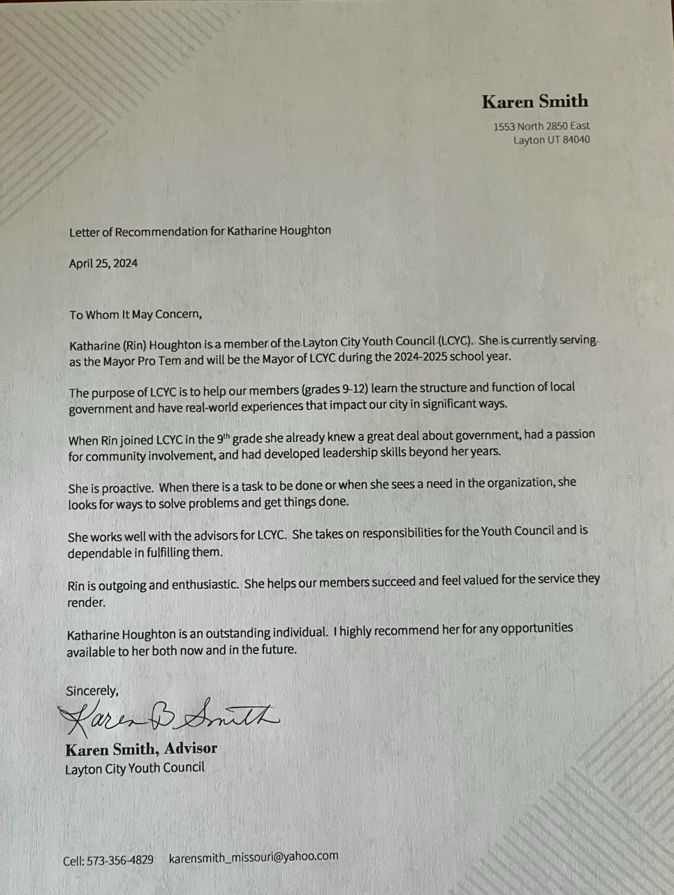

LCYC Advisor
Karen Smith
Karen Smith was my advisor in Layton City Youth Council for 3 years.
View Letter Teacher
Micheal Weaver
Micheal Weaver was my teacher for both Honors English 10 in 10th grade and AP English Literature in 11th grade. He was also the first advisor for the Mock Trial Club I founded and is my Capstone Advisor
View LetterSeptember 25, 2025
To whom it may concern,
I am honored to write this letter of recommendation for Rin Houghton, a remarkable student whom I have had the pleasure of teaching for the past two years. I first encountered Rin as a sophomore in my honors English class, and later had the privilege of working with her in my AP English Literature course. Throughout this time, I have witnessed her intellectual growth and dedication, both in and outside of the classroom. Rin brings a unique combination of curiosity, intellectual rigor, and emotional intelligence to all her endeavors.
In class, Rin consistently stands out for her enthusiasm and depth of thought. She approaches discussions not only with the intent to share her well-considered opinions but also with an open mind, eager to hear and incorporate others’ perspectives. It is a true pleasure to watch her challenge her own thinking, refine her arguments, and evolve in her understanding of complex topics. She is a thoughtful, reflective learner who demonstrates a rare ability to adapt and grow intellectually.
Rin’s diverse talents and leadership abilities extend beyond the classroom. As the founder of a mock trial club at NUAMES, she displayed exceptional initiative and organizational skill. Although the team was unable to compete during its first year, Rin’s commitment to the project never wavered. Under her leadership, the club not only prepared a case but also staged their own trial, a testament to her dedication and ability to motivate others. This year, the club will be competing with other schools, an accomplishment largely due to Rin’s guidance and hard work.
In addition to her leadership in mock trial, Rin is also a gifted Dungeon Master in the school’s Dungeons & Dragons club, where her creativity and ability to engage others shines. Her imaginative storytelling, coupled with her capacity to manage group dynamics, makes her a beloved and effective leader within this community. Whether organizing a complex trial or guiding a group through a fantastical adventure, Rin exhibits the same commitment to excellence and creativity.
Academically, Rin is nothing short of exceptional. She has a natural aptitude for making connections between ideas, synthesizing information, and applying her knowledge to new and unfamiliar material. Her ability to learn quickly and deeply sets her apart from her peers. Rin is not afraid to challenge her assumptions and always approaches learning with intellectual humility. Her outstanding performance on the AP English Literature exam, where she earned a score of 5, further attests to her academic prowess and determination.
Beyond her academic and extracurricular achievements, Rin is also an articulate and confident public speaker. She is comfortable addressing large groups, presenting her ideas with clarity and conviction, and engaging her audience in meaningful ways. Rin’s maturity, poise, and eloquence set her apart as a leader among her peers.
In conclusion, I have no hesitation in recommending Rin Houghton for any personal or professional role she pursues. She is an exceptional individual who combines intelligence, creativity, leadership, and a strong sense of integrity. I have no doubt that Rin will continue to excel and make a meaningful impact in whatever path she chooses.
Sincerely,
Michael D. Weaver